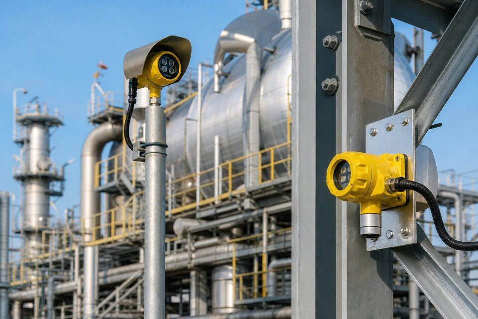

نقش سیستم (FGS) در ایمنی واحد
در واحدهای فرایندی، نشت هیدروکربن و وقوع حریق دو مخاطره اصلیاند که سرعت واکنش در آنها تعیینکننده است. سیستم (FGS) سه وظیفه دارد: آشکارسازی زودهنگام حریق یا نشت گاز، هشدار به پرسنل و اتاق کنترل، و در صورت نیاز فعالسازی خودکار اقدامات حفاظتی مانند اطفای حریق، قطع جریانها و تهویه اضطراری. این سیستم به صورت مستقل از کنترل فرایندی طراحی میشود تا در شرایطی که فرایند از کنترل خارج شده، همچنان عمل کند. پوششدهی درست مناطق، انتخاب فناوری آشکارساز متناسب هر مخاطره و تنظیم منطق واکنش، سه رکن طراحی (FGS) هستند. سیستمی که خوب طراحی شده باشد، در ثانیههای اول یک حادثه، تفاوت بین یک رویداد کنترلشده و یک فاجعه را رقم میزند.

آشکارسازهای حریق
برای حریق سه خانواده اصلی آشکارساز وجود دارد. آشکارسازهای دود، ذرات حاصل از احتراق ناقص را تشخیص میدهند و برای فضاهای بسته و مراحل اولیه حریق مناسباند اما در محیطهای باز صنعتی کاربرد محدودی دارند. آشکارسازهای حرارت، افزایش دما یا نرخ آن را میسنجند و ساده و مقاوماند اما پاسخ کندتری دارند. آشکارسازهای شعله، تابش ماوراء بنفش یا مادون قرمز آتش را میبینند و در فضاهای باز صنعتی انتخاب رایجاند؛ فناوریهای چندطیفی آنها ایمنی در برابر هشدار کاذب را بهبود دادهاند. انتخاب فناوری باید بر اساس نوع سناریوی حریق، فاصله دید و شرایط محیطی مانند گرد و غبار و نور خورشید انجام شود؛ یک انتخاب اشتباه یا حجم زیادی هشدار کاذب تولید میکند یا حریق واقعی را نمیبیند.
آشکارسازهای گاز
- گازهای قابل اشتعال: معمولا با فناوری کاتالیزوری یا مادون قرمز، با بیان غلظت بر اساس درصد حد پایین انفجار.
- گازهای سمی: مانند هیدروژن سولفید با سنسورهای الکتروشیمیایی و آستانههای ایمنی مشخص.
- آشکارسازهای نقطهای: پایش یک منطقه مشخص در نزدیکی منابع نشت احتمالی.
- سیستمهای خطی و مسیرباز: پایش مسیرهای طولانی و مناطق وسیع.
- نمونهگیری فعال: مکش هوا از نقاط متعدد به سمت سنسور مرکزی برای حساسیت بالاتر.
طراحی پوشش آشکارسازهای گاز بر اساس تحلیل نشت و انتشار انجام میشود: منابع نشت احتمالی مانند فلنجها، پمپها و نمونهگیریها شناسایی و آشکارسازها در نقاطی نصب میشوند که ابر گاز با توجه به چگالی و جهت باد غالب به آنها میرسد. آستانههای هشدار معمولا در دو سطح تعریف میشوند: هشدار اولیه برای بررسی و سطح بالاتر برای اقدامات خودکار. نگهداری این آشکارسازها اهمیت ویژهای دارد، چون سنسورهای گاز مصرفیاند و کالیبراسیون دورهای آنها با گاز مرجع، شرط قابلیت اتکا است؛ سنسوری که کالیبره نباشد، حتی اگر روشن باشد، اطلاعات درستی نمیدهد.
منطق و اقدامات خودکار
مغز سیستم (FGS)، منطقپرداز ایمنی آن است که سیگنال آشکارسازها را طبق ماتریس علل و نتایج پردازش میکند. برای کاهش هشدار کاذب، معمولا از منطق رایج استفاده میشود: مثلا فعالسازی اطفای اتوماتیک فقط زمانی انجام میشود که حداقل دو آشکارساز در یک منطقه همزمان تحریک شوند. اقدامات خودکار نیز متناسب منطقه تعریف میشوند: فعالسازی آبپاشها یا سیستمهای فوم و گاز، قطع تغذیه مناطق درگیر، توقف تهویه برای جلوگیری از گسترش و ارسال فرمان قطع به سیستم (ESD). در کنار خودکارسازی، ایستگاههای دستی اعلام و قطع نیز در مسیرهای تردد نصب میشوند تا پرسنل بتوانند قبل از آشکارسازی خودکار، سیستم را فعال کنند. همه این سناریوها باید مستند، آزمون و در بهرهبرداری بازنگری شوند.
الزامات استانداردها و ناحیه خطر
طراحی و نصب سیستم (FGS) با مجموعهای از استانداردها تنظیم میشود: استانداردهای اعلام و اطفای حریق، الزامات سیستمهای ایمنی ابزار و مقررات ناحیه خطر برای تجهیزات نصبشده در مناطق مستعد انفجار. تجهیزاتی که در مناطق طبقهبندیشده نصب میشوند باید متناسب زون و گروه گازی انتخاب شوند و گواهیهای مربوطه را داشته باشند. همچنین مفاهیم چرخه عمر ایمنی بر (FGS) نیز حاکم است: تعیین سطح ایمنی توابع، آزمونهای دورهای و مدیریت تغییرات. برای خریدار، این الزامات یعنی هر تجهیز پیشنهادی باید گواهی ناحیه خطر و سطح ایمنی موردنیاز را داشته باشد و سازنده بتواند مدارک آن را ارائه دهد؛ بدون این مدارک، نصب تجهیز در واحد غیرمجاز است.
نکات خرید و نگهداری
در خرید سیستم (FGS)، ابتدا پوششدهی و سناریوها را بر اساس تحلیل ریسک مشخص و سپس فناوری آشکارسازها را متناسب انتخاب کنید. از سازنده بخواهید گواهیهای ناحیه خطر، سوابق پروژههای مشابه و برنامه کالیبراسیون و قطعات مصرفی را ارائه دهد. هزینه مالکیت را فراتر از قیمت اولیه ببینید: سنسورهای گاز، آزمونهای دورهای و کالیبراسیون، هزینههای جاری قابل توجهی دارند. در بهرهبرداری، برنامه کالیبراسیون و تستهای دورهای را بدون تاخیر اجرا و نتایج را ثبت کنید؛ و هر تغییری در چیدمان واحد که ممکن است پوشش آشکارسازها را تحت تاثیر قرار دهد، با بازنگری طراحی همراه سازید. سیستم (FGS) مانند هر سیستم ایمنی دیگری، به اندازه آخرین آزمون آن قابل اتکاست.
جمعبندی
سیستم (FGS) ترکیبی از آشکارسازی هوشمند، منطق ایمنی و اقدام سریع است که در ثانیههای اول حادثه، سرنوشت واحد را تعیین میکند. با طراحی مبتنی بر تحلیل ریسک، انتخاب تجهیزات دارای گواهی و برنامه نگهداری منظم، این سیستم همواره آماده خواهد بود و سرمایهگذاری ایمنی شما را در لحظه نیاز واقعی محافظت میکند.
سوالات رایج
سیستم (FGS) چیست؟
سیستم ایمنی مستقلی که حریق و نشت گاز را آشکار، هشدار میدهد و در صورت نیاز عملیات اطفای اتوماتیک و قطعهای اضطراری را فعال میکند؛ جدا از سیستم کنترل فرایندی.
انواع اصلی آشکارسازها کداماند؟
آشکارسازهای دود، حرارت و شعله برای حریق و آشکارسازهای گاز قابل اشتعال و سمی برای نشت؛ هر نوع فناوری و کاربرد خاص خود را دارد.
چرا منطق رایج در (FGS) استفاده میشود؟
برای کاهش هشدارهای کاذب و عملهای ناخواسته؛ معمولا فعالسازی اطفای اتوماتیک نیازمند تایید چند آشکارساز در یک منطقه است.
سیستم (FGS) چه ارتباطی با (ESD) دارد؟
هر دو لایههای ایمنی مستقلاند؛ (FGS) بر مخاطرات حریق و گاز تمرکز دارد و میتواند درخواست قطع را به (ESD) ارسال کند، اما معمولا دو سیستم مجزا با یکپارچگی در سطح پایشاند.
مطالب مرتبط
طراحی و تامین تجهیزات سیستم (FGS) مطابق الزامات ایمنی و ناحیه خطر پروژه.
مشاهده صفحه محصول ← ثبت RFQ همین محصولتامین این تجهیزات را به پیشرو تجهیز فرتاک بسپارید
شرکت پیشرو تجهیز فرتاک تامینکننده تخصصی تجهیزات صنعتی برای پروژههای نفت، گاز، پتروشیمی، فولاد و نیروگاهی است. برای دریافت پیشنهاد فنی و قیمت، استعلام (RFQ) خود را ثبت کنید تا کارشناسان مهندسی فروش در کوتاهترین زمان پاسخ دهند.
- تامین ابزار دقیقتجهیزات ایمنی و کنترل
- تامین تجهیزات صنایع نفت و گازپکیج مواد مطابق وندورلیست